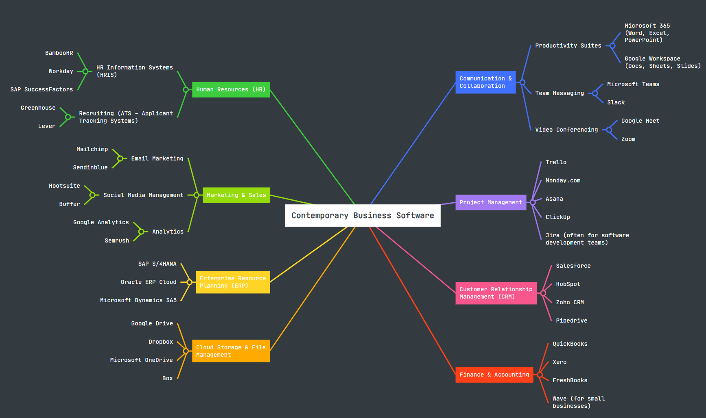

<section>
  <div>
    <div class="task-card1">
      <div class="card-header" onclick="toggleCard(this)">
        <h1>Task 2: Mind-map of Contemporary Software Applications</h1>
        <button class="collapse-btn">−</button>
      </div>
      <div class="card-content">
        <h3>2a: Mind Maps in Modern Business Operations</h3>
        <p>In today’s fast-paced, information-rich business environment, companies are constantly looking for tools to streamline their thinking, planning, and communication. One of the most effective and flexible of these tools is the mind map.</p>

        <p><strong>What is a mind map?</strong><br>
        A mind map is a non-linear graphic diagram used to organise information visually. It is based on a central concept or theme at the centre of the sheet. From this central idea, related subtopics, keywords, tasks, and images radiate out like the branches of a tree.</p>

        <h4>Benefits of mind maps in business operations:</h4>
        <ol>
            <li><strong>Improve brainstorming and creativity:</strong> Current research confirms that using mind maps has a significant positive effect on creative thinking during brainstorming <a href="#ref1" class="ref-link">[1]</a>.</li>
            <li><strong>Optimise project planning and task management:</strong> A mind map allows project managers to visually decompose a large goal into key steps and tasks. A 2021 study identifies mind maps as an effective technique for supporting project management <a href="#ref2" class="ref-link">[2]</a>.</li>
            <li><strong>Effectively structure information and manage knowledge:</strong> They help companies structure and visualise complex knowledge sets, making information easier to understand <a href="#ref3" class="ref-link">[3]</a>.</li>
            <li><strong>Strengthen collaboration and communication:</strong> When a company’s strategy is presented as a map, complex relationships become apparent, improving team communication <a href="#ref3" class="ref-link">[3]</a>.</li>
        </ol>
      </div>
    </div>

    <div class="task-card1">
      <div class="card-header" onclick="toggleCard(this)">
        <h2>2b. Mind Map Visualization</h2>
        <button class="collapse-btn">−</button>
      </div>
      <div class="card-content">
        <div class="refworks-gallery-ssb2" style="justify-content: center; margin-bottom: 30px;">
            <figure>
                <a href="images/mindmap_ssb.png" data-caption="Mind Map Visualization">
                    
                </a>
                <figcaption>Mind Map Visualization</figcaption>
            </figure>
        </div>
      </div>
    </div>

    <div class="task-card1">
      <div class="card-header" onclick="toggleCard(this)">
        <h2>References</h2>
        <button class="collapse-btn">−</button>
      </div>
      <div class="card-content">
        <h3>References</h3>
        <p id="ref1">[1] N. H. B. M. Shafie et al., “The effect of mind mapping on students' creative thinking skills in brainstorming,” <em>International Journal of Academic Research in Business and Social Sciences</em>, vol. 13, no. 11, pp. 1952–1961, 2023.</p>
        <p id="ref2">[2] M. G. G. P. W. Purnamawati et al., “Mind mapping techniques in project management,” <em>IOP Conference Series: Materials Science and Engineering</em>, vol. 1098, no. 3, p. 032070, 2021.</p>
        <p id="ref3">[3] J. Tarasova and M. B. Y. Egorova, “Knowledge structuring and visualization by mind mapping,” <em>Education and Information Technologies</em>, vol. 27, no. 7, pp. 9363–9382, 2022.</p>
      </div>
    </div>
  </div>
</section>